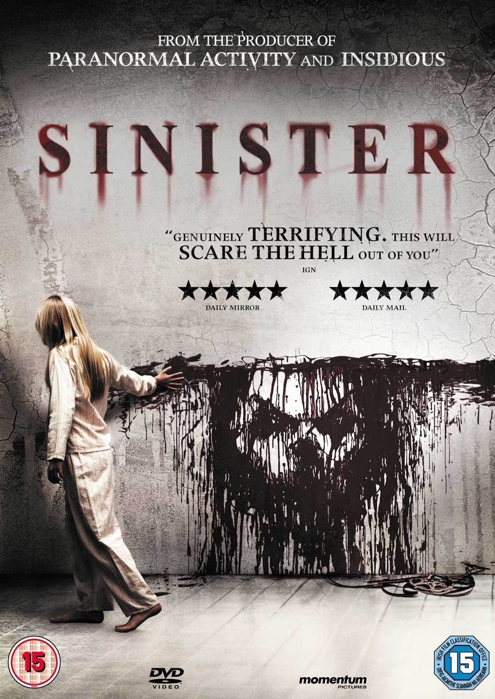
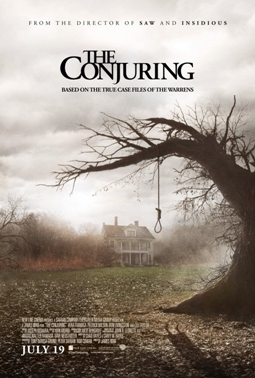
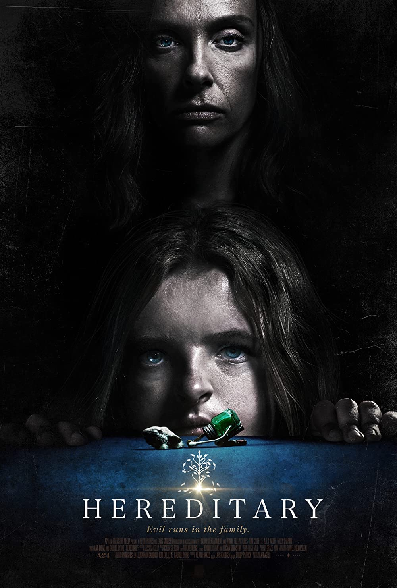
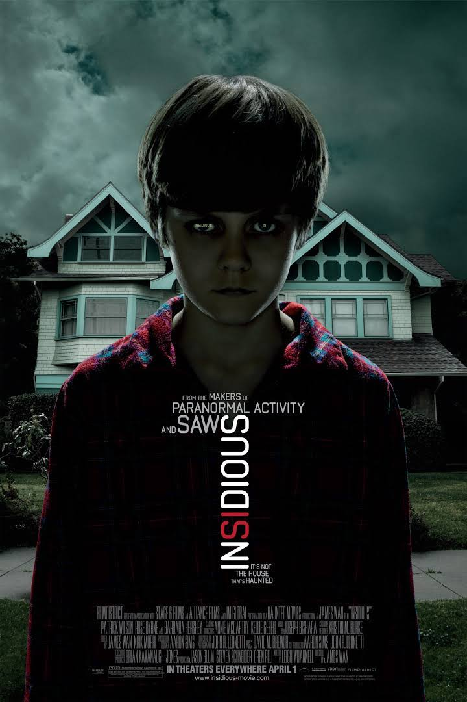
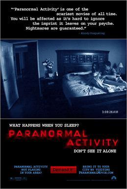
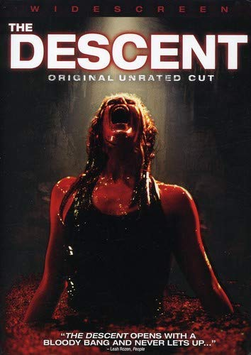
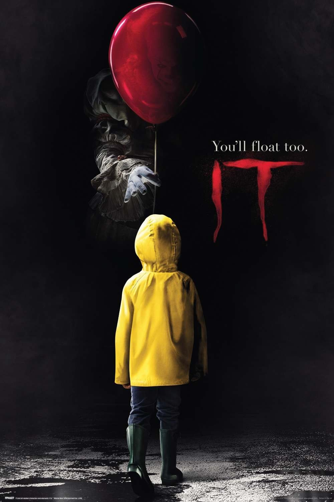
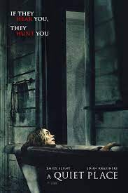

Regan, a young girl, displays bizarre behaviour after playing with a Ouija board. Chris, her mother and an actress, consults two priests who conclude that Regan is possessed by a demonic entity.
Sinister

Star Rating
True crime novelist Ellison Oswald (Ethan Hawke) is so desperate to repeat the success of his first book that he moves his family into a home that served as the setting of a brutal murder. But instead of inspiration, Ellison finds a box of mysterious home movies in the attic that seem to point to unspeakable terrors — ones that could threaten his entire family.
The Conjuring

Star Rating
In 1970, paranormal investigators and demonologists Lorraine (Vera Farmiga) and Ed (Patrick Wilson) Warren are summoned to the home of Carolyn (Lili Taylor) and Roger (Ron Livingston) Perron. The Perrons and their five daughters have recently moved into a secluded farmhouse, where a supernatural presence has made itself known. Though the manifestations are relatively benign at first, events soon escalate in horrifying fashion, especially after the Warrens discover the house's macabre history.
Hereditary

Star Rating
After the death of their father, three young girls find themselves in abject poverty. The responsibility to provide for the family lands on the oldest sisters, who are also dealing with heartbreaks.
Insidious

Star Rating
Josh and Renai move to a new house, seeking a fresh start. However, when their son, Dalton, mysteriously falls into a coma, paranormal events start occurring in the house.
Paranormal Activity

Star Rating
You demanded it and now the surprise hit critics call “one of the scariest movies of all time”* can be experienced in the most terrifying place of all…your home. After a young, middle-class couple moves into what seems like a typical suburban house, they become increasingly disturbed by a presence that may or may not be demonic but is certainly most active in the middle of the night. Especially while they sleep. Paranormal Activity builds suspense all the way to the shocking ending.
The Descent

Star Rating
One year after a tragic accident, six girlfriends meet in a remote part of the Appalachians for their annual caving trip. Deep below the surface of the earth, disaster strikes when a rock falls and blocks their route back to the surface. The group splinters and each one pushes on, praying for another exit. But there is something else lurking under the earth — a race of monstrous humanoid creatures that have adapted perfectly to life in the dark. As the friends realize they are now prey, they are forced to unleash their most primal instincts in an all-out war against an unspeakable horror — one that attacks without warning, again and again and again.
The Ring
Star Rating
Paul, the head guard of a prison, meets an inmate, John, an African American who is accused of murdering two girls. His life changes drastically when he discovers that John has a special gift.
It

Star Rating
Seven helpless and bullied children are forced to face their worst nightmares when Pennywise, a shape-shifting clown, reappears. The clown, an ancient evil torments children before feeding on them.
A Quiet Place

Star Rating
A teenager from the slums of Mumbai becomes a contestant on the show 'Kaun Banega Crorepati?' When interrogated under suspicion of cheating, he revisits his past, revealing how he had all the answers.